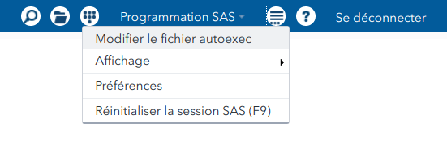

Introduction à SAS
introSAS.RmdSAS onDemand for Academics: Studio
Inscrivez-vous sur SAS OnDemand for Academics et créez un compte sur https://odamid.oda.sas.com en sélectionnant l’option Register for an account.
Après avoir créé un compte utilisateur, suivez ces étapes:
- Inscrivez vous sur le centre de contrôle (Control Center) à https://odamid.oda.sas.com.
- Choisir l’option Enroll in a course dans la section Enrollments en bas de la page: cliquez sur le lien.
- Inscrivez le code du cours:
50a343b3-1e64-47e1-99f6-b4fd666fd0be. - Soumettez le formulaire.
- Confirmez le choix du cours et terminez l’inscription pour Studio
Si vous accédez à SAS onDemand, vous pouvez créer la bibliothèque contenant toutes les données utilisées en classe en mode lecture seule automatiquement en ajoutant la ligne suivante au fichier autoexec: LIBNAME modstat "~/my_shared_file_links/u41148888/modstat" access=readonly;

Introduction à SAS
Répétez les instructions précédentes, cette fois en ajoutant la bibliothèque suivante:
LIBNAME multi "~/my_shared_file_links/u41148888/multi" access=readonly;Vous pouvez également télécharger les données (fichier .zip) et créer votre propre bibliothèque. Pour ce faire, créez un dossier contenant les bases de données (extension .sas7bdat) et utilisez les commandes suivantes:
Création d’une nouvelle bibliothèque
Sélection du répertoire
Les liens qui suivent contiennent une capsule vidéo avec une narration des diapositives, le code SAS utilisé dans les exemples ainsi que quelques exercices (le code SAS rattaché aux exercices contient les solutions annotées, mais je vous enjoins à essayer par vous même avant de les consulter).
Installation du logiciel
Nous utiliserons uniquement les modules SAS/BASE et SAS/STAT. Si vous désirez installer SAS sur votre ordinateur (uniquement pour Windows) plutôt que d’utiliser la version serveur, vous pouvez télécharger et installer le logiciel: la licence institutionnelle offerte par les TIs est gratuite, mais ces derniers vous font payer le téléchargement. Vous pouvez partager cette dernière avec vos camarades. Si vous avez déjà acheté le logiciel par le passé, vous avez droit aux mises à jour gratuites. Le logiciel est disponible tant que vous êtes étudiant(e)s à HEC.